EMToast: The Absurd Universe Evolves (2014–2015) | Podcast Deep Dive

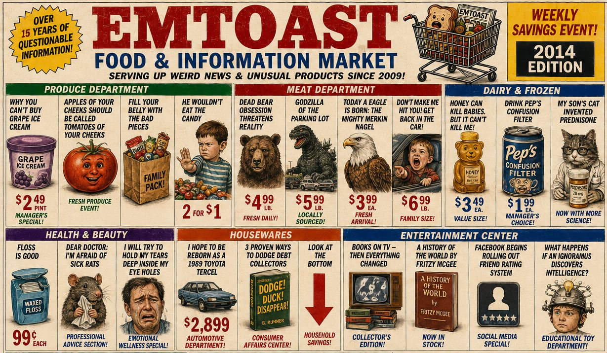
EMToast: The Absurd Universe Evolves (2014–2015) continues the chronological deep dive into EMToast history, exploring the surreal humor, fake news stories, bizarre recurring characters, offbeat advice columns, and evolving internet absurdity that defined the site during 2014 and 2015.
In this episode, we look back at another strange and reflective chapter of EMToast posts, from Dear Mom and Dad and Facebook Begins Rolling Out Friend Rating System to All the Robots Are Wiping Now, Dead Bear Obsession Threatens Reality, Why You Can’t Buy Grape Ice Cream, and selections from the “Ask the Doctor” column, featuring unsettlingly funny advice like “run away from home” and emotional detachment coping strategies.
As the series progresses, EMToast’s humor begins to shift—still absurd and chaotic, but increasingly self-aware, using satire to explore technology, social connection, emotional isolation, and the strangeness of modern life in a digital world that is becoming harder to ignore.
Read the original posts discussed in this episode:
EMToast Timeline:
https://emtoa.st/yearly-timeline/
2014 Archive:
https://emtoa.st/yearly-timeline/#year-2014
2015 Archive:
https://emtoa.st/yearly-timeline/#year-2015
Visit EMToast:
https://emtoa.st/
Graphics from this episode are below:
{kind=link}
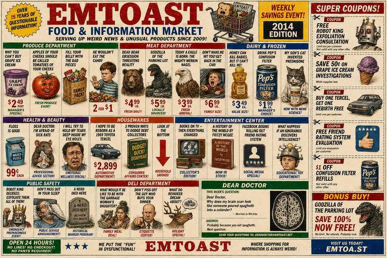
{kind=link}
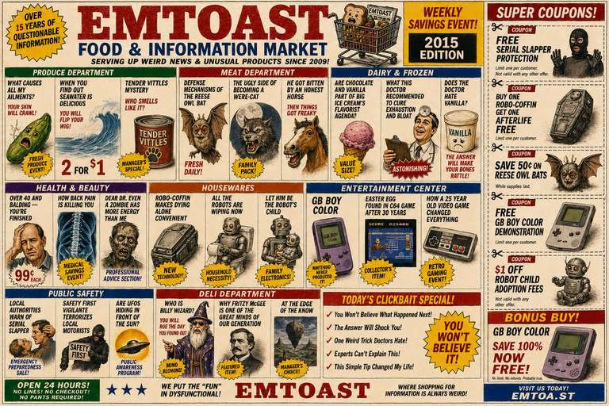
{kind=link}
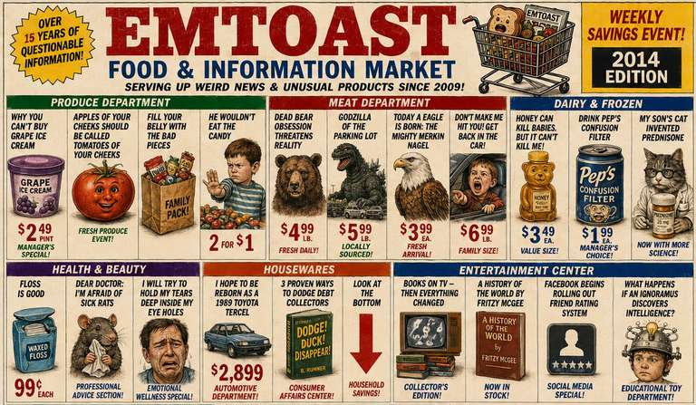
{kind=link}
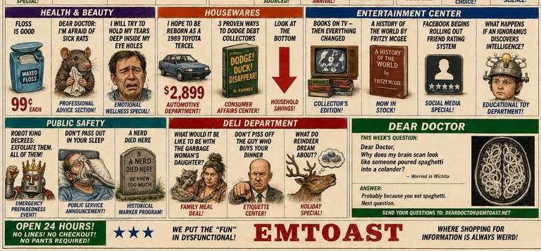
{kind=link}
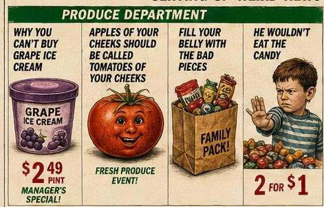
{kind=link}
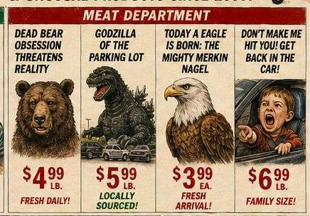
{kind=link}
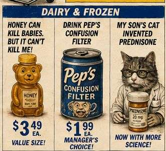
{kind=link}
{kind=link}
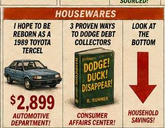
{kind=link}
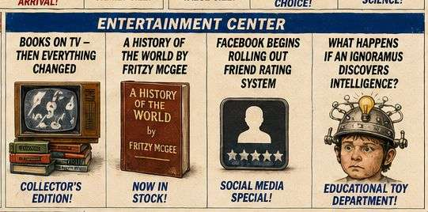
{kind=link}
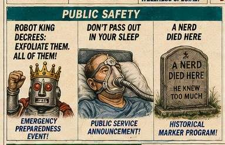
{kind=link}
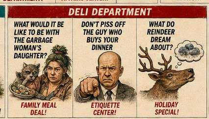
{kind=link}
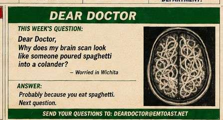
{kind=link}
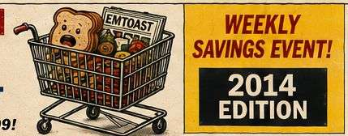
{kind=link}
{kind=link}
{kind=link}
{kind=link}
{kind=link}
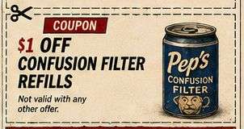
{kind=link}
{kind=link}
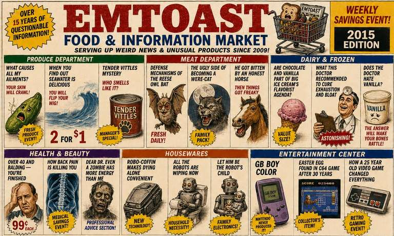
{kind=link}
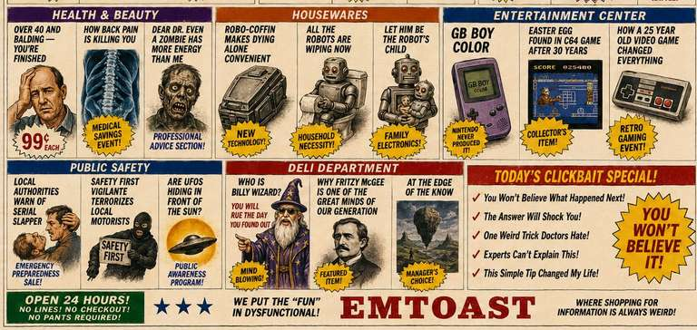
{kind=link}
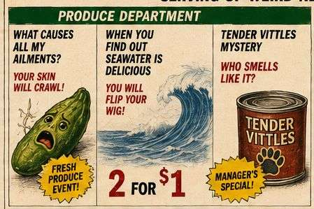
{kind=link}
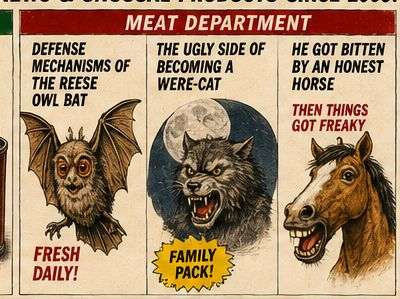
{kind=link}
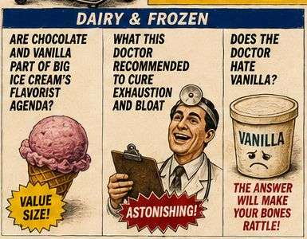
{kind=link}
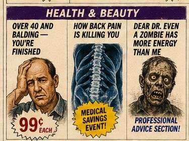
{kind=link}
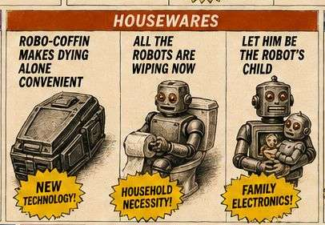
{kind=link}
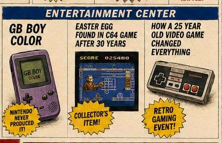
{kind=link}
{kind=link}
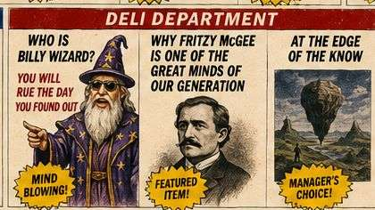
{kind=link}
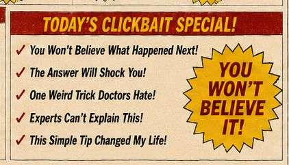
{kind=link}
{kind=link}
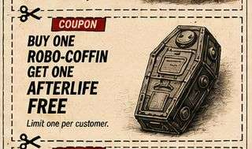
{kind=link}
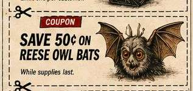
{kind=link}
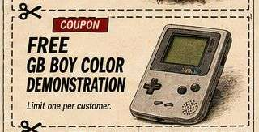
{kind=link}
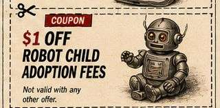
{kind=link}
EMToast: The Absurd Universe Evolves (2014–2015) Transcript
00:00
HOST 1: Ever stumble upon something online so weird that it makes you wonder, am I the only one who's ever seen this?
HOST 2: Oh yeah.
HOST 1: That's exactly how I felt digging into this collection of writing from EMToast.com. It's archived from around 2014 and 2015, and it's like opening a digital time capsule filled with bizarre news stories, fever-dream short stories, and advice columns that would make your therapist raise an eyebrow.
00:30
HOST 2: What's fascinating about EMToast is that it uses absurdist humor as a lens to examine some surprisingly profound ideas.
HOST 1: Technology's impact on relationships. The anxieties of social connection. And maybe most importantly, the sheer strangeness of being alive.
HOST 2: And what's remarkable is how relevant all of those themes still feel today, even though the digital landscape has changed so much since 2014.
00:45
HOST 1: So where do we even begin unpacking the EMToast voice?
HOST 2: It's this fascinating tightrope walk between cynicism and sincerity.
HOST 1: That's not an easy balance to strike.
HOST 2: No, but I think that's exactly why the writing works. There's this dark, often self-deprecating humor woven throughout, but then these moments of vulnerability shine through. Those flashes of genuine emotion make the narrator surprisingly relatable.
01:15
HOST 1: You can really see that contrast in Dear Mom and Dad from January 8, 2014.
HOST 2: That's the one where the narrator complains about having to put ketchup on an egg roll because their town doesn't have proper duck sauce.
HOST 1: It's such a bizarrely specific thing to complain about.
01:30
HOST 2: But that's exactly why it works. That one tiny inconvenience snowballs into an absurd existential crisis.
HOST 1: And honestly, who hasn't fixated on something completely trivial when life felt overwhelming?
HOST 2: Exactly.
01:45
HOST 1: Then, immediately after the ketchup complaint, comes the line: "Life is tough. I never know if I'll make it through the day, much less another year."
HOST 2: That shift is jarring. One moment you're laughing about ketchup, and the next you're hit with this very real feeling of anxiety.
HOST 1: That's quintessential EMToast.
02:15
HOST 2: It makes you wonder whether the humor is a coping mechanism—or maybe even a way of connecting with people who feel exactly the same way.
HOST 1: Have you ever felt that disconnect they're describing? That feeling of standing on the outside looking in?
HOST 2: Definitely. EMToast taps into that universal experience of feeling like an outsider.
02:30
HOST 1: Especially when technology enters the picture.
HOST 2: Which is interesting, because we're talking about a period before Instagram and TikTok really dominated everything.
HOST 1: Yet their observations about technology's influence on our lives feel surprisingly prophetic.
02:45
HOST 2: Take Facebook Begins Rolling Out Friend Rating System from March 31, 2014.
HOST 1: Obviously it's satire. None of it actually happened.
HOST 2: But underneath the joke is a genuinely sharp critique.
03:00
HOST 1: The fake friend categories are hilarious.
HOST 2: "Hawker." "Proud Parent." Even categories for people obsessed with '90s country music.
HOST 1: It's comedy, but it's also making you think about the pressure to curate an online identity.
03:15
HOST 2: Even back then people were chasing validation through likes, ratings, and other forms of online approval.
HOST 1: EMToast was dissecting those anxieties years before they became such a dominant part of everyday life.
03:30
HOST 2: It's almost like they could already see where social media was heading.
HOST 1: And you see that even more clearly in All the Robots Are Wiping Now from July 15, 2015.
HOST 2: The title alone is classic EMToast. Completely absurd, yet somehow unsettling.
03:45
HOST 1: That's always been their specialty—mixing humor with unease.
HOST 2: Underneath the ridiculous premise is a thoughtful observation about how isolating technology can become.
HOST 1: The robots "wiping" become this metaphor for how we're disconnecting from one another.
04:00
HOST 2: Even without literal robots.
HOST 1: There's one line that really stuck with me: "These tools provide an illusion of connectedness, yet we are actually disconnected."
HOST 2: It's incredible how accurately that captured the feeling back in 2015.
04:15
HOST 1: Long before people were talking about digital isolation the way they do now.
HOST 2: That's what makes EMToast feel almost prophetic. It uses absurd humor to point toward uncomfortable truths.
04:45
HOST 1: And their social commentary isn't limited to technology.
HOST 2: Their short stories also shine a light on the absurdity of everyday life.
HOST 1: They're like little windows into parallel universes where ordinary reality is just slightly off.
05:00
HOST 2: A perfect example is Dead Bear Obsession Threatens Reality from January 9, 2014.
HOST 1: The premise is ridiculous. People start seeing dead bears everywhere they go.
HOST 2: But it's not simply played for laughs.
05:15
HOST 1: There's this underlying anxiety that makes you wonder whether the narrator is slowly losing touch with reality.
HOST 2: It reminds me of waking up from an incredibly vivid dream and not being able to shake the feeling that it really happened.
05:45
HOST 1: That's something EMToast does remarkably well. It taps into those unsettling thoughts that most people keep buried beneath the surface.
HOST 2: Then it amplifies ordinary anxieties through bizarre, hilarious stories.
HOST 1: And somehow delivers them with a completely straight face.
06:00
HOST 2: Whether it's Godzilla of the Parking Lot or He Wouldn't Eat the Candy, every story feels strange, unexpected, and oddly relatable.
HOST 1: That's really the genius of EMToast. It uses absurdity to highlight the inherent weirdness of everyday life.
06:30
HOST 2: It makes you step back and see your own routines from a completely different perspective.
HOST 1: Like looking into a funhouse mirror.
HOST 2: And that's exactly what makes these stories stick with you.
06:30
HOST 2: It makes you step back and see your own routines from a completely different perspective.
HOST 1: Like looking into a funhouse mirror.
HOST 2: Exactly. And it’s not just the short stories—it’s also how they build entire fake histories that feel weirdly convincing.
06:45
HOST 1: Like Why You Can’t Buy Grape Ice Cream from February 19, 2014.
HOST 2: That one’s wild. It reads like a fully documented alternate history of grape ice cream.
HOST 1: With scientific jargon, fake studies, and conspiracy theories woven through it.
07:00
HOST 2: And it’s written so convincingly that for a second you almost question what you actually know.
HOST 1: Right—you’re sitting there thinking, “Wait… was grape ice cream controversial?”
HOST 2: It completely flips something mundane into something bizarrely significant.
07:15
HOST 1: And that’s a recurring EMToast trick—taking everyday things and giving them this exaggerated mythological weight.
HOST 2: Which brings us to one of the more intriguing corners of the site: the Ask the Doctor column.
07:30
HOST 1: This is where things get even more absurd. Outlandish problems, even more outlandish advice.
HOST 2: And it’s never entirely clear if the doctor is being serious, sarcastic, or something in between.
07:45
HOST 1: Like Mom Ignores Child to Talk on the Phone from March 15, 2015.
HOST 2: That one is painfully relatable at its core.
HOST 1: A child feels ignored because the parent is constantly on their phone.
08:00
HOST 2: And the doctor’s advice?
HOST 1: Run away from home.
HOST 2: On the surface it’s ridiculous—but underneath it, there’s a darker commentary about emotional distance and technology.
08:15
HOST 1: Exactly. It’s exaggerated to the point of absurdity, but it’s pointing at something real.
HOST 2: That disconnect within families that technology can create.
08:30
HOST 1: Then there’s You Will Be Horror Struck from February 14, 2015.
HOST 2: That one really stuck with me.
HOST 1: The advice is basically to harden your emotions in order to cope with the world.
08:45
HOST 2: It’s disturbing, but also weirdly resonant.
HOST 1: Like emotional armor as a survival strategy.
HOST 2: And it raises a bigger question—are we adapting to a harsh world, or becoming numb to it?
09:00
HOST 1: That’s where EMToast gets really interesting. It’s not just humor—it’s commentary on how people cope.
HOST 2: And how that coping sometimes becomes detachment.
09:15
HOST 1: Across all of this, there’s this consistent tension between absurd humor and genuine emotional insight.
HOST 2: That’s what makes it stick with you long after you’ve finished reading.
09:30
HOST 1: Even in the most ridiculous stories, there’s always something human underneath it.
HOST 2: Like Dead Bear Obsession Threatens Reality, or Godzilla of the Parking Lot—they’re absurd, but emotionally grounded in anxiety.
09:45
HOST 1: It’s almost like EMToast is saying: the world already feels strange, we’re just exaggerating it slightly.
HOST 2: And once you see it that way, everyday life starts to feel a little surreal too.
10:00
HOST 1: That might be the real point of all of it.
HOST 2: Yeah—finding humor in the discomfort of being alive.
10:15
HOST 1: And realizing that a lot of people are quietly dealing with the same anxieties.
HOST 2: Just expressed through absurd stories instead of straightforward conversation.
10:30
HOST 1: So when you step back, EMToast isn’t just weird internet writing.
HOST 2: It’s kind of a reflection of early internet culture itself—messy, experimental, and unfiltered.
10:45
HOST 1: And maybe even a preview of where online expression was heading.
HOST 2: More fragmented. More surreal. More self-aware.
11:00
HOST 1: There’s something almost nostalgic about it now.
HOST 2: Like a snapshot of the internet before everything became overly polished.
11:15
HOST 1: Before algorithms started shaping everything we see.
HOST 2: When weird corners of the web could just exist because someone felt like making them.
11:30
HOST 1: And that’s why revisiting EMToast feels so interesting today.
HOST 2: It reminds you that the internet used to be stranger—and maybe a little freer.
11:45
HOST 1: And that strangeness wasn’t just chaos—it was creativity.
HOST 2: Even when it looked like nonsense on the surface.
12:00
HOST 1: So as we wrap this up, what’s the takeaway?
HOST 2: Maybe it’s that absurdity isn’t separate from meaning—it’s often how meaning shows up.
12:15
HOST 1: And EMToast just leaned all the way into that idea.
HOST 2: Turning internet weirdness into something that still feels surprisingly insightful.
12:30
HOST 1: It leaves you with that feeling of… the world being slightly off, but in a way you can recognize.
HOST 2: And maybe that’s the point—to notice it.
12:45
HOST 1: Because once you do, you can’t really unsee it.
HOST 2: And that’s what makes it stick.
13:00
HOST 1: Thanks for joining this deep dive into EMToast.com.
HOST 2: Until next time—stay curious, and stay weird.
Related posts
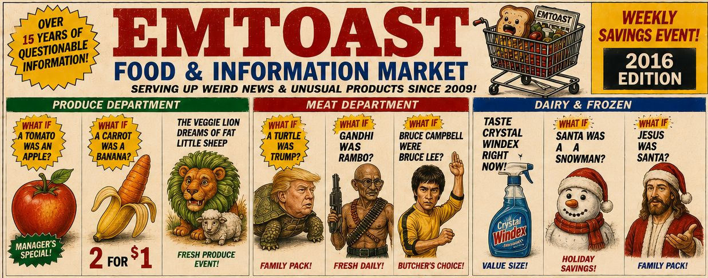
EMToast: The Digital Surrealism Era (2016–2018) | Podcast Deep Dive
EMToast: The Digital Surrealism Era (2016–2018) continues the chronological deep dive into EMToast history, exploring the surreal humor, fake news…

Area 51 Exposed: The Deep Throat Connection
A time traveling space woman is the mother to 70’s pornstar Linda Lovelace? A cranky fortune telling future man named…

EMToast: Top 5 Werewolf Sightings
EMToast has done extensive market research and delved deep into EMToast personal memory banks to bring you the top 5…

EMToast: The Absurd Universe Takes Shape (2010–2011) | Podcast Deep Dive
EMToast: The Absurd Universe Takes Shape (2010–2011) continues the deep dive into the strange evolution of EMToast, exploring how the…